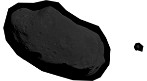
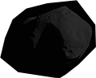
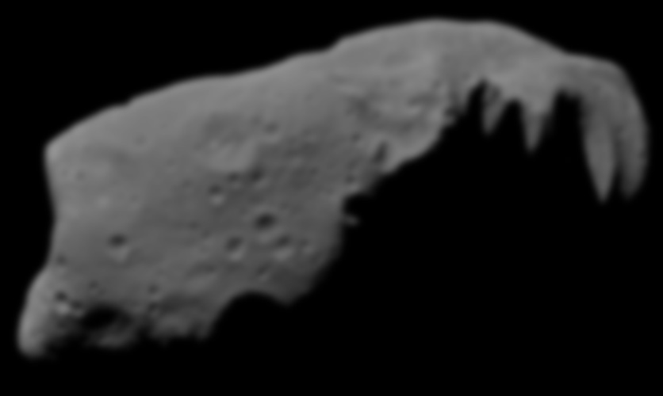
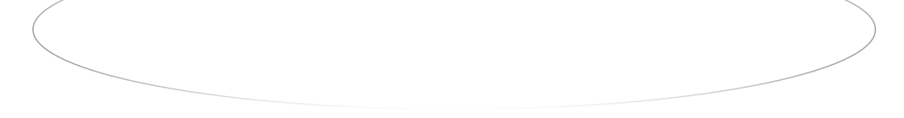
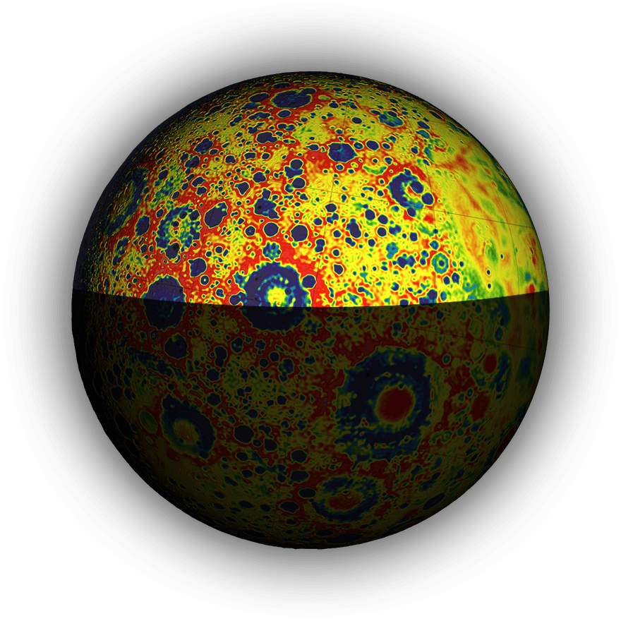

I am an Assistant Professor in the Department of Earth, Environmental and Planetary Sciences at Brown University. My research is focused mainly on impact cratering, which is arguably the most pervasive geologic process in the solar system.

00002



Always On Brandon Johnson

00003
Hydrocode
I mainly use numerical models called hydrocodes to study the formation of impact craters and impact processes. Currently I am modeling the formation of lunar multi-ring basins with a focus on understanding their gravity signatures.

ON | OFF
0004
Other interest include the formation of distal impact ejecta; impact jetting; spallation; the impact origin of chondrules; impacts in extra-solar systems; the reduction of friction during long run-out landslides and earthquakes; the breakup of comets; crater erasure; understanding the lunar gravity field; and other geophysical problems that pique my curiosity.
0005
11 of 13
Publications by Brandon Johnson
Publications by Brandon Johnson
Publicati-
On
Soderblom J.M., Evans A.J.,Johnson, B. C., et al. The fractured Moon: Production and saturation of porosity in the lunar highlands from impact cratering. Geophysical Research Letters 42, doi: 10.1002/2015GL065022 (2015).
Steckloff J. K., Johnson, B. C. Dynamic Sublimation Pressure and the Catastrophic Breakup of Comet ISON. Icarus 258, 430-437 (2015).
Johnson, B. C., et al. Impact jetting as the origin of chondrules. Nature 517, 339-41 (2015).
Freed, A. M., Johnson, B. C., et al. The Formation of Lunar Mascon Basins from Impact to Contemporary Form. Journal of Geophysical Research: Planets 119, JE004657 (2014).
Johnson, B. C. and Bowling, T. J. Where have all the craters gone? The Earth’s bombardment history and the expected terrestrial cratering record. Geology doi: 10.1130/G35754.1 (2014).
Johnson, B. C., et al. Jetting during vertical impacts of spherical projectiles. Icarus 238, 13-22 (2014).
Johnson, B. C. and Melosh, H. J. Formation of melt droplets, melt fragments, and accretionary impact lapilli during a hypervelocity impact. Icarus 228, 347-363 (2014).
Bowling, T. J., Johnson, B. C., et al. Antipodal topography created by the Rheasilvia impact on asteroid 4 Vesta. Journal of Geophysical Research: Planets 118, 1821-1834 (2013).
Melosh H. J., Freed A. M., Johnson, B. C. et al. The Origin of Lunar Mascon Basins. Science 340, 1552-1555 (2013).
Yue, Z., Johnson, B. C., et al. Projectile remnants in central peaks of lunar impact craters. Nature Geosciences 6, 435-437 (2013).
Johnson, B. C., et al. A self-consistent model of the circumstellar debris created by a giant hypervelocity impact in the HD172555 system. The Astrophysical Journal 761, 45-58 (2012).
Johnson, B. C. and Melosh, H. J. Impact spherules as a record of an ancient heavy bombardment of Earth. Nature 485, 75-77 (2012).
Johnson, B. C. and Melosh, H. J. Formation of spherules in impact produces vapor plumes. Icarus 217, 416-430 (2012).

0006
Brand- On


Grail
I was lucky enough to see the launch of the NASA’s GRAIL mission and have presented at several team meetings. One of my driving goals is to be a CO-I or PI on a successful space mission.